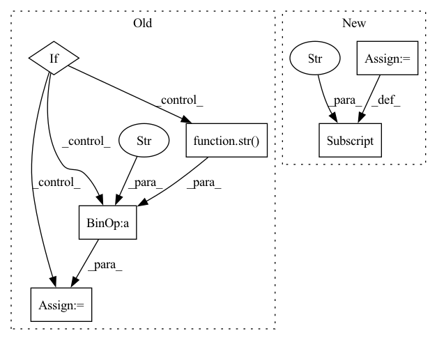

Pattern ID :37175

Before Change
scheduler.step(avg_acc)
lr_last = lr
lr = optimizer.param_groups[0]["lr"]
if lr_last > lr:
load_epoch = np.argmax(metrics["accuracy"])
load_name_tmp = "ep_" + str(load_epoch) + ".m"
self.model.load_state_dict(
torch.load(self.tmp_path + load_name_tmp))
print("load epoch={} model state".format(load_epoch))
if lr <= 0.9 * 1e-5:
After Change
os.makedirs(self.tmp_path)
metrics = {}
metrics["accuracy"] = []
metrics["loss"] = []
train_total_batch = len(train_dataloader.dataset) / \
train_dataloader.batch_size
eval_total_batch = len(eval_dataloader.dataset) / \
In pattern: SUPERPATTERN
Frequency: 4
Non-data size: 6
Instances
Fragment ID: 107199731
Project Name: libcity/bigscity-libcity
Commit Name: 022010c6ffc7ff440e276127d6e6341751e03d69
Time: 2021-04-14
Author: 33283819+WenMellors@users.noreply.github.com
File Name: trafficdl/executor/traj_loc_pred_executor.py
M Class Name: TrajLocPredExecutor
N Class Name: TrajLocPredExecutor
M Method Name: train(3)
N Method Name: train(3)
M Parent Class: AbstractExecutor
N Parent Class: AbstractExecutor
M File Name: trafficdl/executor/traj_loc_pred_executor.py
N File Name: trafficdl/executor/traj_loc_pred_executor.py
M Start Line: 24
M End Line: 74
N Start Line: 33
N End Line: 71
'>
Before Change
layer.add_loss(lambda x=layer: l2(weight_decay)(x.kernel))
// layer.add_loss(l2(weight_decay)(layer.kernel))
if True:
if Freeze_Train:
freeze_layers = {"n":118, "s": 118, "m": 167, "l": 216, "x": 265}[phi]
for i in range(freeze_layers): model_body.layers[i].trainable = False
print("Freeze the first {} layers of total {} layers.".format(freeze_layers, len(model_body.layers)))
batch_size = Freeze_batch_size if Freeze_Train else Unfreeze_batch_size
start_epoch = Init_Epoch
end_epoch = Freeze_Epoch if Freeze_Train else UnFreeze_Epoch
nbs = 64
lr_limit_max = 1e-3 if optimizer_type == "adam" else 5e-2
lr_limit_min = 3e-4 if optimizer_type == "adam" else 5e-4
Init_lr_fit = min(max(batch_size / nbs * Init_lr, lr_limit_min), lr_limit_max)
Min_lr_fit = min(max(batch_size / nbs * Min_lr, lr_limit_min * 1e-2), lr_limit_max * 1e-2)
optimizer = {
"adam" : Adam(lr = Init_lr_fit, beta_1 = momentum),
"sgd" : SGD(lr = Init_lr_fit, momentum = momentum, nesterov=True)
}[optimizer_type]
model.compile(optimizer = optimizer, loss={"yolo_loss": lambda y_true, y_pred: y_pred})
lr_scheduler_func = get_lr_scheduler(lr_decay_type, Init_lr_fit, Min_lr_fit, UnFreeze_Epoch)
epoch_step = num_train // batch_size
epoch_step_val = num_val // batch_size
if epoch_step == 0 or epoch_step_val == 0:
raise ValueError("数据集过小，无法进行训练，请扩充数据集。")
train_dataloader = YoloDatasets(train_lines, input_shape, anchors, batch_size, num_classes, anchors_mask, Init_Epoch, UnFreeze_Epoch, \
mosaic=mosaic, mixup=mixup, mosaic_prob=mosaic_prob, mixup_prob=mixup_prob, train=True, special_aug_ratio=special_aug_ratio)
val_dataloader = YoloDatasets(val_lines, input_shape, anchors, batch_size, num_classes, anchors_mask, Init_Epoch, UnFreeze_Epoch, \
mosaic=False, mixup=False, mosaic_prob=0, mixup_prob=0, train=False, special_aug_ratio=0)
time_str = datetime.datetime.strftime(datetime.datetime.now(),"%Y_%m_%d_%H_%M_%S")
log_dir = os.path.join(save_dir, "loss_" + str(time_str))
logging = TensorBoard(log_dir)
checkpoint = ModelCheckpoint(os.path.join(save_dir, "ep{epoch:03d}-loss{loss:.3f}-val_loss{val_loss:.3f}.h5"), \
After Change
def train(config):
// 设置日志级别
os.environ["TF_CPP_MIN_LOG_LEVEL"] = config.log_level
train_gpu = config.gpus
classes_path = config.classes_path
anchors_path = config.anchor_path
'>
Fragment ID: 107199713
Project Name: ryanccc/yolo-series
Commit Name: 2030a0d0122289a3201e7ca06fbd12a85aa32735
Time: 2022-09-29
Author: chenjl@augurit.com
File Name: train/train_yolov7.py
M Class Name: AnonimousClass
N Class Name: AnonimousClass
M Method Name: train(1)
N Method Name: train(1)
M Parent Class:
N Parent Class:
M File Name: train/train_yolov7.py
N File Name: train/train_yolov7.py
M Start Line: 42
M End Line: 189
N Start Line: 15
N End Line: 190
'>
Before Change
from scipy import io
def QM7_process(name, path, target = None):
if target is None:
raise AttributeError("Please specify the target label in the target_list.QM7_targets!")
utils.download_unzip(name, path, "qm7b.mat")
df = io.loadmat(os.path.join(path,"qm7b.mat"))
targets = ["E_PBE0", "E_max_EINDO", "I_max_ZINDO", "HOMO_ZINDO", "LUMO_ZINDO", "E_1st_ZINDO", "IP_ZINDO", "EA_ZINDO", "HOMO_PBE0", "LUMO_PBE0", "HOMO_GW", "LUMO_GW", "alpha_PBE0", "alpha_SCS"]
targets_index = list(range(len(targets)))
targets2index = dict(zip(targets, targets_index))
y = df["T"].T[targets2index[target]]
drugs = df["X"]
drugs_idx = np.array(["Drug " + str(i) for i in list(range(drugs.shape[0]))])
return drugs, y, drugs_idx
After Change
df = pd.DataFrame()
df["X"] = pd.Series([i for i in inx["X"]])
df = pd.concat([df, pd.DataFrame(inx["T"], columns = targets)], axis = 1)
df["ID"] = ["Drug " + str(i+1) for i in range(len(df))]
df.to_pickle("/Users/kexinhuang/Desktop/qm7b.pkl")
def QM8_9():
'>
Fragment ID: 107199751
Project Name: mims-harvard/tdc
Commit Name: 77a6e4386efd75bd5d14443ee59d04cdfb98e3cc
Time: 2020-11-06
Author: kexinhuang@hsph.harvard.edu
File Name: data_process/QM_utils.py
M Class Name: AnonimousClass
N Class Name: AnonimousClass
M Method Name: QM7_process(3)
N Method Name: QM7_process(3)
M Parent Class:
N Parent Class:
M File Name: data_process/QM_utils.py
N File Name: data_process/QM_utils.py
M Start Line: 13
M End Line: 27
N Start Line: 17
N End Line: 25